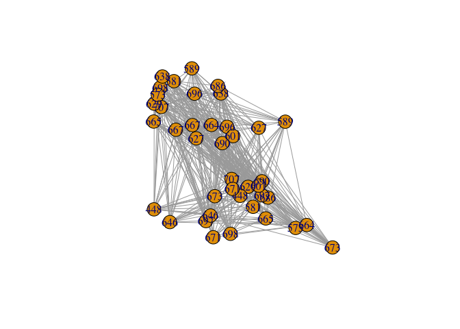

My Final Project Template
Economic interaction among cities after COVID-19
Sunny
Introduction
[~ 200 words]
Clearly stated background and questions / hypotheses / problems being addressed. Sets up the analysis in an interesting and compelling way.
The outbreak of COVID-19 has caused a huge impact on the global economy. To estimate the global economy, the research scale has shifted from countries to cities, and researchers no longer merely focus on a single economic unit but try to estimate the interactions among cities. Thus, to understand the global economy under COVID-19, it is vital to look into the economic interactions among cities. The data set World City Network (WCN) and airline network have been applied to the research of city network, while WCN could estimate the interlocking network of cities through the global location strategies of Advance Produce Service (APS) firms, and the air links between cities are used to evaluate local economic development. However, the two datasets have difficulties estimating real-time city economic interaction during COVID-19. Thus, this study aims to apply social network analysis (SNA) to identify the possible mechanism of the rapid chaining economic city network. By applying QAP or exponential-family random graph models on WCN and airline datasets, this research will interpret the transformation of the role of cities and the configuration in the network before and after the outbreak of COVID-19.
Materials and methods
[~ 200 words]
Narrative: Clear narrative description of the data sources and methods. Includes data from at least two sources that were integrated / merged in R.
Code: The code associated with the project is well organized and easy to follow. Demonstrates mastery of R graphics and functions.
Data: The underlying data are publicly accessible via the web and downloaded/accessed within the Rmd script. If you want to use your own data, you must make it available on a website (e.g. Figshare) so that others are able to re-run your code.
You can do bullets like this:
- The first most important thing
- The second most important thing
- The third most important thing
You can do numbers like this:
- The first most important thing
- The second most important thing
- The third most important thing
See http://rmarkdown.rstudio.com/ for all the amazing things you can do.
Here’s my first code chunk.
Load any required packages in a code chunk (you may need to install some packages):
# devtools::install_github("briatte/ggnet")
# install.packages("ggnet")
library(dplyr)
library(igraph)
library(network)
library(intergraph)
library(sna)
library(ggplot2)
library(ggnet)
library(GGally)Download and clean all required data
svm <- read.csv2("data/da28_svm2016.csv", header=TRUE, sep=",")
air.edge<-read.table("data/2014 airline .csv",sep=",",header = T)
airport_name<-read.csv2("data/airport0825.csv",sep=",",header = T) combining airline data and airport data
airport<-c('JFK','LCY','HKG','SIN','PVG','PEK','CDG','HND','DXB','ORD','SYD','FRA','GRU','DCA','LAX','YYZ','MXP','MAD','BOM','ICN')
city_list<-c("London","New York","Hong Kong","Singapore","Shanghai","Paris","Beijing","Tokyo","Chicago","Dubai","Sydney","Frankfurt", "Sao Paulo","Washington","Los Angeles","Milan","Madrid", "Mumbai","Toronto","Moscow")
airport<-cbind(airport,city_list)
air.edge<-air.edge %>%
filter(Source.airport == "JFK"|Source.airport == "LCY"|
Source.airport == "HKG"|Source.airport == "SYD"|
Source.airport == "SIN"|Source.airport == "FRA"|
Source.airport == "PVG"|Source.airport == "GRU"|
Source.airport == "PEK"|Source.airport == "DCA"|
Source.airport == "CDG"|Source.airport == "LAX"|
Source.airport == "HND"| Source.airport == "YYZ"|
Source.airport == "DXB"|Source.airport == "MXP"|
Source.airport == "ORG"|Source.airport == "MAD"|
Source.airport == "BOM"|Source.airport == "ICN")
air.edge<-air.edge %>%
filter(Destination.airport == "JFK"|Destination.airport == "LCY"|
Destination.airport == "HKG"|Destination.airport == "SYD"|
Destination.airport == "SIN"|Destination.airport == "FRA"|
Destination.airport == "PVG"|Destination.airport == "GRU"|
Destination.airport == "PEK"|Destination.airport == "DCA"|
Destination.airport == "CDG"|Destination.airport == "LAX"|
Destination.airport == "HND"| Destination.airport == "YYZ"|
Destination.airport == "DXB"|Destination.airport == "MXP"|
Destination.airport == "ORG"|Destination.airport == "MAD"|
Destination.airport == "BOM"|Destination.airport == "ICN")
#air.edge
air.edge<-merge(air.edge,airport,by.x="Source.airport",by.y="airport",all.x=TRUE)
names(air.edge)[3]<-"Source"
air.edge<-merge(air.edge,airport,by.x="Destination.airport",by.y="airport",all.x=TRUE)
names(air.edge[4])<-"Destination"
air.edge<-air.edge[3:4]air.g<- graph.data.frame(air.edge,directed = F)
#V(air.g)$name<-V(air.g)$city_list
plot(air.g,
vertex.color="darkgoldenrod1", #node color
vertex.size=15,# node size
node.alpha = 0.6,
vertex.label.color="black", #text color
vertex.label.dist=3, # text of distance from node
edge.color="grey74", #edges color
edge.width=0.5,
layout=layout_nicely(air.g),
alpha=0.5)
Cities <- rownames(svm)
Firms <- colnames(svm)
# svm <- svm[,-c(1:3)]
row.names(svm) <- Cities
svm_mat <- data.matrix(svm, rownames.force=TRUE)
#finding top 20 firms
firm_sum<-as.data.frame(colSums(svm_mat))
firm20<-firm_sum%>%
arrange(desc(colSums(svm_mat)))%>%
slice(n=1:20)
firm_list<-row.names(firm20)
#finding top 20 cities
city_sum<-as.data.frame(rowSums(svm_mat))
city20<-city_sum%>%
arrange(desc(rowSums(svm_mat)))%>%
slice(n=1:20)
city_list<-row.names(city20)
svm_mat_small<-svm_mat[city_list,]
svm_mat_small<-svm_mat_small[,firm_list]
city_m<-tcrossprod(svm_mat_small, y=NULL)
firm_m<-tcrossprod(t(svm_mat_small), y=NULL)
# nw <- cbind(rbind(firm_nw, diag(20)), rbind(diag(20), city_nw))
# nw <- network(nw, directed = T)
# nw%v%"layer.mem" <- c(rep(1, 20), rep(2, 20))
# nw%v%"type" <- rep(types, 2)
diag(firm_m)<-0
firm_m<-firm_m*0.01
firm_m<-rbind(firm_m[1:15,]*0,firm_m[16:20,])
firm.g<- graph.adjacency(firm_m, mode="undirected",weighted = NULL) #igraph
#plot(firm.g)
plot(firm.g,
vertex.color="steelblue2", #node color
vertex.size=15,# node size
vertex.label.color="black", #text color
vertex.label.dist=3, # text of distance from node
edge.color="grey74", #edges color
edge.width=0.5,
alpha=0.5,
vertex.shape="square",
layout=layout_nicely(firm.g),
vertex.frame.color="#ffffff") # lwd of edges
city_m<-tcrossprod((svm_mat_small), y=NULL)
diag(city_m)<-0
city_m<- as.matrix(city_m)
city_nw <- graph.incidence(city_m,weighted = T) #network
plot(city_nw)
row.names(city_m)## [1] "665" "707" "581" "664" "627" "448" "686" "671" "690" "698" "629" "673"
## [13] "573" "697" "638" "667" "696" "646" "589" "601"city_cor<- read.csv2("data/20city_coor_1010.csv", header=TRUE, sep=",")
city_nw<-set_vertex_attr(graph=city_nw,name="lat", value=city_cor$lat)
city_nw<-set_vertex_attr(graph=city_nw,name="lon", value=city_cor$lon)
plot(city_nw)# feed centroid coordinates to igraph)
flights <- network(city_m, directed = TRUE)
flights %v% "lat" <- as.numeric(city_cor$lat)
flights %v% "lon" <- as.numeric(city_cor$lon)## Warning: NAs introduced by coercionflights %v% "City"<- city_cor$City
invisible(lapply(c("ggplot2", "maps", "network", "sna"), base::library, character.only = TRUE))
world <- fortify(maps::map("world", plot = FALSE, fill = TRUE))
world <- ggplot(world, aes(x = long, y = lat)) +
geom_polygon(aes(group = group), color = "grey65",
fill = "#f9f9f9", size = 0.2)
a<-as.vector((rnorm(342,0.5,0.4))^2)
p <- ggnetworkmap(world,flights,
node.color = "red3",
node.alpha = 0.6,
great.circles = FALSE,
segment.color="gray60",
label.nodes = TRUE,
label.size = 3.5,
size=10,
segment.size = a)+
labs(color="nodes")
plot(p)## Warning: Removed 1 rows containing missing values (geom_point).## Warning: Removed 1 rows containing missing values (geom_text).
library(mapview)
library(leaflet)
#mapview(flights)Results
[~200 words]
Tables and figures (maps and other graphics) are carefully planned to convey the results of your analysis. Intense exploration and evidence of many trials and failures. The author looked at the data in many different ways before coming to the final presentation of the data.
Show tables, plots, etc. and describe them.
Conclusions
[~200 words]
Clear summary adequately describing the results and putting them in context. Discussion of further questions and ways to continue investigation.
References
All sources are cited in a consistent manner